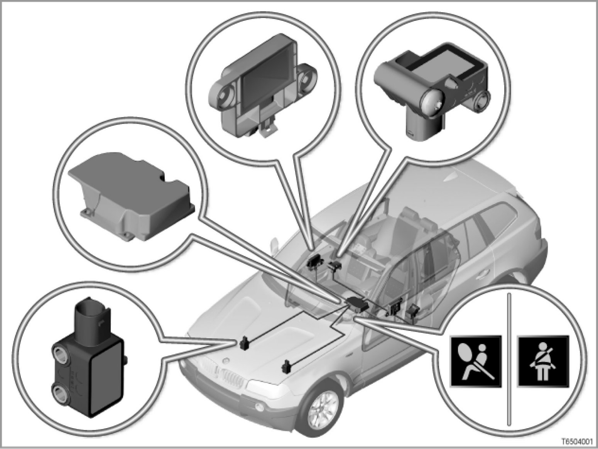

Multiple Restraint System
650203 (041)
Multiple restraint system 4
E83

Introduction
Multiple restraint system 4 is a further development of the multiple restraint system (MRS) in the E46.
The MRS performs the following functions:
- Detects an accident situation which could be critical for the occupants
- Activates the necessary restraint systems (selectively, depending on the severity and type of accident)
New features, compared to the previous MRS (E46):
- 2 airbag front sensors
- Front left door satellite and front right door satellite
- Left-hand B-pillar satellite and right-hand B-pillar satellite with lateral and longitudinal acceleration sensors
- The MRS control unit interfaces have been expanded to 75 pins (50 pins in the E46).
- Discontinuation of the MRS acceleration sensors under the front seats
The lateral acceleration sensors are now in the left and right-hand B-pillar satellites.
An advantage compared to the previous multiple restraint system is
more precise airbag trigger control
Brief description of components
The following sensors detect the direction and severity of an impact:
- Airbag front sensors
The airbag front sensors are longitudinal acceleration sensors. The front airbag sensors detect a head-on collision.
- Front left door satellite and front right door satellite
There is a pressure sensor in each satellite door. The pressure sensors detect a side impact.
- Left-hand B-pillar satellite and right-hand B-pillar satellite
The B-pillar satellites each contain a lateral acceleration sensor and a longitudinal acceleration sensor. The sensors are arranged at 90 degrees to each other.
- Acceleration sensors in the MRS control unit
There is a lateral acceleration sensor and a longitudinal acceleration sensor in the MRS control unit. The sensors are arranged at 90 degrees to each other.
The following components provide input signals for the multiple restraint system (MRS):
- Seat-belt-lock switch (driver and passenger seat)
The seat-belt-lock switch indicates whether the seat belt is engaged or not.
The seat-belt-lock switch is powered by the MRS control unit. The power consumption of the switch forms the signal for the switch position (seat belt engaged or not engaged).
The seat-belt-lock switches on the driver and passenger seats are permanently monitored when terminal R is ON. For example, if a seat belt is released while the vehicle is in motion, there is a seat-belt warning.
A seat-belt warning is started when terminal 15 is ON.
The seat-belt warning indicates to the occupants that they should fasten their seat belts.
The seat-belt warning is an extension of the previous time-dependent display (seat-belt warning lamp in the instrument cluster for approximately 6 seconds after terminal 15 is switched ON).
- Seat-belt-lock switch (US version)
When terminal 15 is ON, a seat-belt warning lamp lights up and a warning sounds if the driver and passenger seat belts are not engaged. Once the driver and passenger seat belts are engaged in the corresponding buckles, the seat-belt warning lamp and the audible warning are switched off.
If a seat belt is released while the vehicle is in motion, the seat-belt warning lamp lights up and a warning signal sounds for approximately 90 seconds.
The MRS control unit uses the signal from the seat-belt-lock switch to determine whether an airbag should be triggered at stage 1 (seat belt not engaged) or at stage 2 (seat belt engaged).
- Passenger seat occupancy detector
The passenger seat-occupancy detector recognizes whether the seat is occupied or not. When a weight is placed on the seat, resistance in the seat-occupancy mat changes.
If the multiple restraint system (MRS) triggers the driver's airbag, the passenger airbag and belt tensioner will not be triggered if the passenger seat is unoccupied.
- Passenger seat-occupancy detector (US version)
Due to legal requirements in the USA, a child seat securing a one-year-old child which is placed on the passenger seat must be automatically detected. Upon detection, the airbags on the passenger side are automatically deactivated (passenger airbag and front right-hand side airbag).
The passenger seat-occupancy detector is based on an evaluation of the surface pressure generated by the person sitting down. The electronic evaluation decides whether a person or a child seat is occupying the seat. If a one-year-old child in a child seat is detected, the airbags on the passenger side are deactivated (warning lamp for passenger-airbag deactivation lights up).
Several control units make up the multiple restraint system (MRS):
- Multiple restraint system control unit
All gas generators and sensors in the multiple restraint system (MRS) are connected to the MRS control unit.
The MRS control unit evaluates the data it receives from the sensors. In the event of a head-on or side impact, the control unit determines whether it is necessary to deploy any airbags and which airbags should be deployed.
- Digital motor electronics or digital diesel electronics
When an airbag is triggered, the electric fuel pump is switched off by the DME or DDE (DME = Digital Motor Electronics, DDE = Digital Diesel Electronics).
Signal path: MRS control unit -> K bus -> instrument cluster -> PT-CAN -> DME or DDE -> direct line -> fuel-pump relay> electric fuel pump
- Instrument cluster
The instrument cluster triggers the optical and audible seat-belt warning.
The MRS control unit only sends a message on the status of the seat belts and the seat-occupancy detector.
The instrument cluster receives the status message from the MRS control unit via the body bus when terminal R is ON. Depending on the status, the optical and audible warning is triggered when terminal 15 is ON.
The following components are controlled:
- Ignition circuit for the airbags
With the maximum amount of equipment, the multiple restraint system consists of the following ignition circuits:
- Driver's airbag (stage 1)
- Passenger airbag (stage 1)
- Driver's airbag (stage 2)
- Passenger airbag (stage 2)
- Side airbag in the front left door
- Side airbag in the front right door
- Side airbag in the left rear door (option 261)
- Side airbag in the right rear door (option 261)
- Left-hand head airbag
- Right-hand head airbag
- Belt tensioner, front left
- Belt tensioner, front right
- Safety battery terminal
Driver and passenger airbag
The driver and passenger airbag reduce the risk of injury to the occupants in the event of a head-on collision.
The driver airbag is located in the center pad on the steering wheel. The passenger airbag is integrated into the instrument panel above the glove compartment. The driver and passenger airbags each have a dual-stage gas generator. The airbags are triggered at different levels depending on the severity of the accident.
Side airbags
The side airbags reduce the risk of injury to the occupants in the event of a side collision. The side airbags are located behind the door trim panel. The side airbags are always triggered at stage 1.
Head airbags
The head airbags protect the occupants' head in the event of an impact to the side body panels. They also protect the head from objects that may enter the vehicle.
Belt tensioners
The pyrotechnic belt tensioners pull the front seat belts tight against the occupants' body in the event of a head-on or rear-end collision.
In a normal situation, the seat belt does not sit completely tight against the body. The seat belt always has a small degree of play to guarantee the occupants an adequate degree of comfort. The play of a fastened seat belt is know as slack. The prevent the negative effects of this slack, the seat belt buckle is pulled down several centimeters by gas generators in the event of an accident. This pulls the seat belt tight.
Safety battery terminal
Depending on the severity of the accident, the safety battery terminal disconnects the starter motor and the alternator from the power circuit. This minimizes the risk of short circuits in a serious accident. The trigger signal comes from the MRS control unit.
- Airbag warning lamp
The airbag warning lamp shows the operational capability of the multiple restraint system (MRS). The airbag warning lamp is located in the instrument cluster and is controlled by the MRS control unit (via the K bus).
After the ignition is switched on, the MRS performs a self test. While this is being run, the airbag warning lamp lights up (approximately 3 to 5 seconds). When the system is ready, the airbag warning lamp goes out.
If, during the self test or while the vehicle is in motion, the MRS control unit detects an existing fault or one that has been stored, the airbag warning lamp remains on.
If the MRS detects a fault, the operational capability is partially maintained, if possible, subject to the following:
- If a fault is detected in an MRS circuit, only the affected circuit is deactivated. The other airbags and belt tensioners remain operational.
- If there is a fault in the airbag warning lamp circuit, the lamp does not light up. If there is no other fault, the MRS remains fully operational.
If there is an internal fault in the MRS control unit or in the power supply, the entire system is deactivated.
- Deactivation of the passenger airbag and the front right-hand side airbag
The passenger airbag and the front right-hand side airbag are deactivated by a coding procedure.
- Warning lamp for passenger-airbag deactivation (US version)
If the warning lamp for passenger-airbag deactivation (passenger airbag off lamp) is lit, both airbags on the passenger side have been deactivated: the passenger airbag and the front right-hand side airbag
The passenger airbag off lamp is constantly monitored by the MRS control unit. A fault in the power supply or a defective lamp is stored in the MRS control unit's fault memory. If this occurs, the airbag warning lamp is switched on.
The passenger airbag OFF lamp is located in the control panel in the overhead console.
- Shutting off the fuel pump
When an airbag is triggered, the fuel feed is also shut off.
Mechanical components in the multiple restraint system (MRS):
- Seat belts
The seat belts are the primary restraint system for all occupants. A lap and diagonal automatic belt is fitted on each seat.
If there is a very severe impact, the seat belt strap may cause injuries to the chest of the person it is securing. To minimize this risk, the front seat belts are fitted with belt force limiters as standard. The belt force limiters allow the seat belt to be unrolled in a controlled fashion if the belt force exceeds a critical value. The risk of injury due to the belt force acting on the body is therefore reduced.
- Passive knee protection (US version)
Not every state in the USA has a requirement for seat belts to be worn. Therefore, the E83 also has additional plastic impact protection on the driver and passenger sides. In the event of an impact, the passive knee protection provides a flat support for the lower leg, especially if the front passengers are not wearing their seat belts. This causes the forwards movement of the upper body to be controlled towards the relevant airbag (driver or passenger airbag).
System functions
The following system functions of the multiple restraint system (MRS) are described:
- Triggering the multiple restraint system
- Emergency call (EURO version)
- Emergency call (US version)
Triggering the multiple restraint system
Extensive testing has allowed the triggering thresholds to be determined for all possible types of accidents.
Various triggering thresholds were set for activating the different restraint systems:
The multiple restraint system comprises:
- Belt tensioners
- Front airbags
- Side airbags
- Head airbags
- Safety battery terminal
- Electric fuel pump
The following examples illustrate how the various restraint systems are triggered:
- Head-on collision
The belt tensioners, the front airbags and the safety battery terminal are triggered if the head-on collision is so severe that the triggering threshold of the MRS control unit is exceeded.
The belt tensioners have a lower triggering threshold than the front airbags. The belt tensioners are therefore triggered earlier.
If the seat-belt-lock switch is faulty, the triggering threshold for the front airbag on this side is lowered. Even though there is a fault message, the MRS control unit will try to trigger the belt tensioners.
If the seat-occupancy detector is faulty, the control unit assumes that the passenger seat is occupied. The restraint systems are activated.
The electric fuel pump is switched off. An automatic emergency call is initiated (only in vehicles with the relevant equipment fitted).
- Side impact
The side impact must be severe enough for the triggering threshold in the MRS control unit to be exceeded.
The side airbag and the head airbag are deployed on the side affected. The safety battery terminal is also triggered.
The electric fuel pump is switched off. An automatic emergency call is initiated (only in vehicles with the relevant equipment fitted).
- Front diagonal impact
The airbags and belt tensioners are triggered depending on the impact speed and the angle of the impact. If several triggering thresholds are exceeded (e.g. the triggering thresholds for a head-on collision and a side collision), the corresponding restraint systems for head-on and side collisions are triggered.
- Rear-end collision
The belt tensioners and the safety battery terminal are triggered if the rear-end collision is so severe that the triggering threshold of the MRS control unit is exceeded. An automatic emergency call is initiated (only in vehicles with the relevant equipment fitted).
- Rollover
The MRS control unit does not detect the vehicle rolling over. If there is a collision after the vehicle has rolled and the triggering thresholds are exceeded for a head-on and side collision, the relevant restraint systems are triggered.
The electric fuel pump is switched off.
An automatic emergency call is initiated (only in vehicles with the relevant equipment fitted).
Emergency call (EURO version)
In vehicles equipped with BMW Assist, the multiple restraint system (MRS) has an additional function: the automatic emergency call
If at least one airbag is triggered in the event of an accident, BMW Assist automatically initiates an emergency call. The vehicle data and its exact location, which is determined by the GPS navigation system, are transmitted to the emergency call center.
Emergency call (US version)
All vehicles have the emergency control function as follows:
- Telematic control unit (TCU)
- Telephone aerial
- Hands-free device
- GPS aerial for location determination
The E83 has the following types of emergency call as standard:
- Manual emergency call
The emergency call button is directly connected to the telephone. Pressing the emergency call button establishes a voice connection with the provider. The voice connection is indicated by a flashing LED in the emergency call button.
The emergency call button is integrated into the control panel in the overhead console.
- Automatic emergency call:
If the accident is of corresponding severity, the MRS control unit sends a signal to the Telematics Control Unit (TCU). The TCU initiates an emergency call which also contains the location of the vehicle. The TCU receives the location determination for the navigation system. If a navigation system has not been installed, the location is determined by an internal GPS receiver in the TCU.
Notes for service staff
- General notes:
- Diagnosis:
- Coding/programming:
- Car and Key Memory: ---
Subject to change.